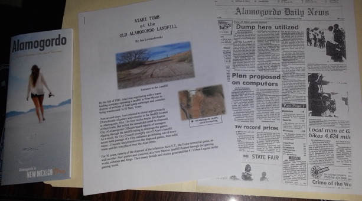
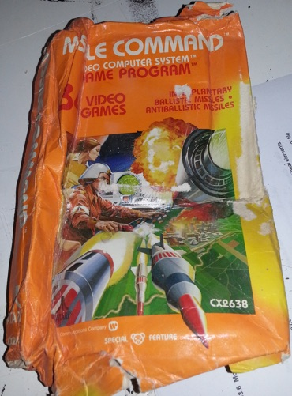
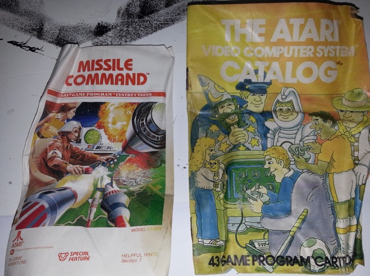
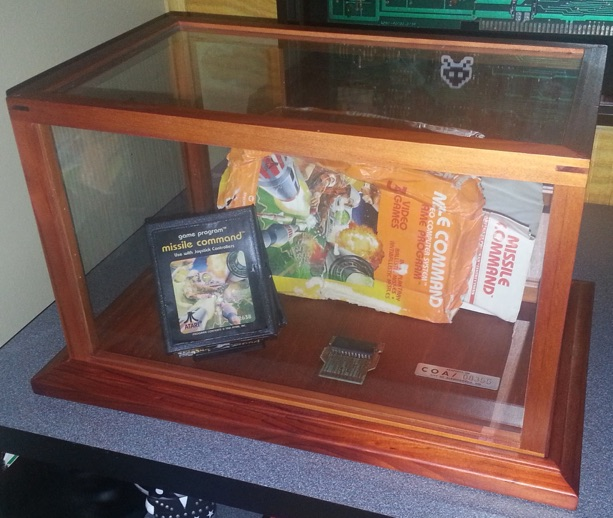
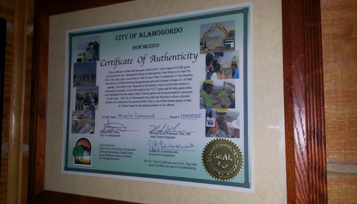

A piece of history - an Atari dump cartridge
Thursday, January 8, 2015
In my November 20th post (click here to read it), I detailed the Alamogordo, New Mexico burial of truckloads of Atari 2600 cartridges in 1983, as well as the 2014 unearthing of them as detailed in the documentary Atari: Game Over. Essentially these buried Atari cartridges represent the death of Atari (and to a lesser extent, the video game crash of 1983), due primarily to market saturation and not to the flop of the E.T. video game. If anything, E.T. was a symbolic “last straw” in a series of events that caused Atari and the video game industry to crash and burn.
The Atari: Game Over is a fantastic documentary (I’ve watched it a half dozen times already), and I was fortunate enough to get one of the recovered cartridges from the Alamogordo dump - a copy of my favorite Atari game: Missile Command!
Nostalgia is a powerful thing - we often remember the good feelings and events from our past and omit/downplay the bad ones. For me, a cartridge from the Alamogordo dump symbolizes the game company that I grew up with and loved in a way that few other objects could. Those from other generations can’t possibly understand how incredibly cool Atari was. Atari was practically synonymous with “video game” back then, and you could find the Atari logo everywhere. Atari made the coolest arcade machines, computers, and home video games (almost everyone had an Atari 2600 - I spent a ridiculously large amount of time having fun playing mine). There was even a big neon Atari sign within the movie Bladerunner (a 1982 sci-fi movie that takes place in a dystopian future) because even movie producers at the time thought that Atari would last forever.....
But it didn’t. And its gravestone is the Alamogordo dump.
The people who dug up the Atari cartridges and made the associated documentary understood the importance of their task, as do the fine people who work for the City of Alamogordo (which actually owns the cartridges). While some copies were sent to museums, the City of Alamogordo allowed some to be sold to the public.....more specifically, those members of the public who could appreciate their value.
When my cartridge arrived, I immediately framed the certificate of authenticity (shown at the top of this post). Instead of a boring certificate, Alamogordo’s certificate contains pictures of the dig, a description detailing the significance of the find, and the signatures of the city mayor, Joe Lewandowski (who ran the dig), Howard Scott Warshaw (the creator of the E.T. game originally thought to be the only game in the landfill - less than 10% of the cartridges found were E.T.).
Alongside the certificate of authenticity, there was a metal plate with the same asset number on the certificate, an Alamogordo tourism pamphlet, copies of relevant newspaper clippings from 1983 and the present day, as well as a detailed description of the Atari burial written by Joe Lewandowski called “ATARI TOMB at the OLD ALAMOGORDO LANDFILL.” I enjoyed this last piece the best because it wasn’t proofread, and was clearly printed on a color inkjet printer......in other words, it was something more personal....instead of something that was polished for reading and mass duplicated at some copy shop:


The video game itself was in fairly good condition compared to most of the ones that were recovered. Although it was a bit scrunched, most of the artwork on the box is intact as shown to the right. The game came in a zip-lock bag. When you opened the bag, it didn’t smell, but if you put your nose close to the game, it definitely smelled like a dump. It wasn’t overpowering, but it was definitely gross - it was like the same smell you get if you stick your head in the kitchen garbage at the end of the week.
So I filled the bottom of a small Rubbermaid container with fresh coffee grinds, put the game inside, closed the lid and let it sit for 48-hours. Coffee grinds are incredibly good at absorbing smells (even heavy smoke smell), and after the 48-hours, the gross smell was entirely gone!
What I did next was open the top of the box and remove the cartridge for cleaning. I was surprised to find that the game label was intact and in decent shape. The game cartridge was also intact, but had separated a small amount under the pressure of the landfill - luckily, I was able to carefully remove the bottom port and circuit board without having to unscrew the cartridge (which wrecks the label) as shown below.

The circuit board was fully intact, but had a massive amount of corrosion on the metal cover over the ROM chip and the green coating on the copper traces was either heavily tarnished or non-existent. I ended up sanding off the remainder of the green coating (leaving the copper underneath), threw out the corroded chip cover, and gave the board a good cleaning. I don’t think I’m going to try to get it working again like Ben Heck did with an Asteroids cartridge from the same dump......but since my game looks in better shape than Ben’s, I’m sure it would still work if I did. Finally, I cleaned the plastic components with laundry detergent and reassembled the cartridge.
Another neat surprise for me was that the manual and catalog inside the box were intact as shown below. Although they were bent, you could turn the pages with very little effort.

So what did I do from here? Well.....I picked a display case from Michaels that matches the wood in the frame holding the certificate of authenticity and stuck in the components. I decided on showcasing the cartridge and game board separate from the box and manuals, as well as found a better spot for it than I had originally planned in my games room. You can see the final pic below or watch a Youtube video of it: http://youtu.be/e3lidKiZfEs

